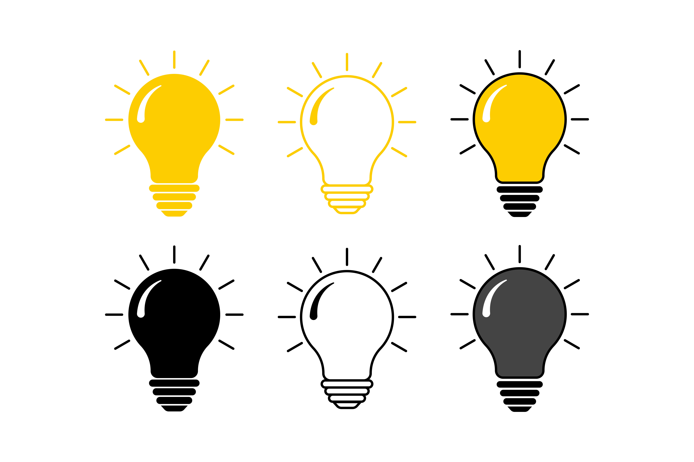
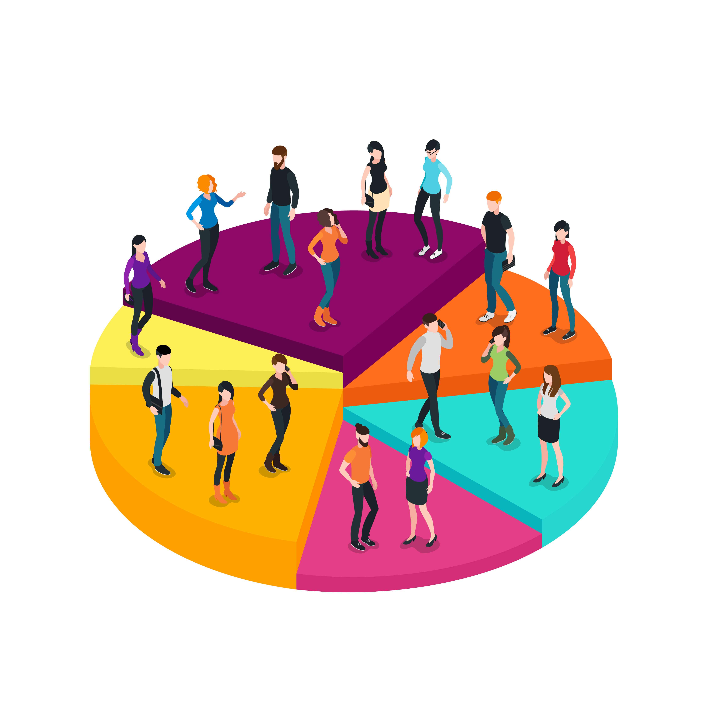

Идея проекта
Создание единой платформы для поиска и участия в конкурсах, грантах и олимпиадах по всей России. Платформа будет агрегировать информацию о конкурсах, предоставлять персонализированные рекомендации и напоминания о сроках подачи заявок. Мы обеспечим удобный интерфейс для всех пользователей, которые смогут быстро и эффективно найти нужные мероприятия.

Проблема
Информация о конкурсах разрозненная и труднодоступная. Участники тратят много времени на поиск актуальных мероприятий, часто пропуская сроки подачи заявок. Это особенно сложно для школьников, студентов и молодых специалистов, которые не имеют опыта в поиске и подаче заявок на конкурсах.
Решение
Платформа всеконкурсы.РФ агрегирует все возможности в одном месте, помогает пользователям с подачей заявок, напоминаниями, консультациями и аналитикой. Мы предлагаем интуитивно понятный интерфейс и инструменты для эффективной подачи заявок и отслеживания результатов. Вся информация о конкурсах будет собрана в одном месте, что ускорит поиск и упростит процесс подачи заявок.
Целевая аудитория
Школьники, студенты, педагоги, НКО, стартапы, муниципалитеты — все, кто ищет новые возможности для роста и развития. Более 20 млн человек по всей России потенциально заинтересованы в платформе. Мы также ориентируемся на образовательные учреждения и другие организации, которые могут использовать платформу для распространения информации о конкурсах.

Конкурентные преимущества
Искусственный интеллект Василиса — ваш персональный навигатор. Она помогает найти релевантные конкурсы, оформляет заявки, ведёт календарь и отправляет напоминания. Также предусмотрен AI-чат, встроенная аналитика и API для организаций. Василиса облегчает жизнь пользователю, предоставляя не только информацию, но и персонализированные рекомендации, что делает её незаменимым помощником.

Бизнес-модель
Freemium: базовый доступ бесплатный, платные подписки для организаций и экспертов, продвижение конкурсов, доступ к расширенной аналитике и инструментарий для проведения собственных мероприятий. Организации смогут продвигать свои конкурсы и получать доступ к мощным инструментам аналитики и управления заявками.
Запрос на грант
Мы просим 1 млн рублей на запуск и тестирование платформы в 4 регионах России в течение 12 месяцев. Бюджет включает разработку, маркетинг, зарплату команде и создание базы конкурсов. С помощью этих средств мы сможем выйти на ключевых пользователей и масштабировать проект по всей России.
.webp)